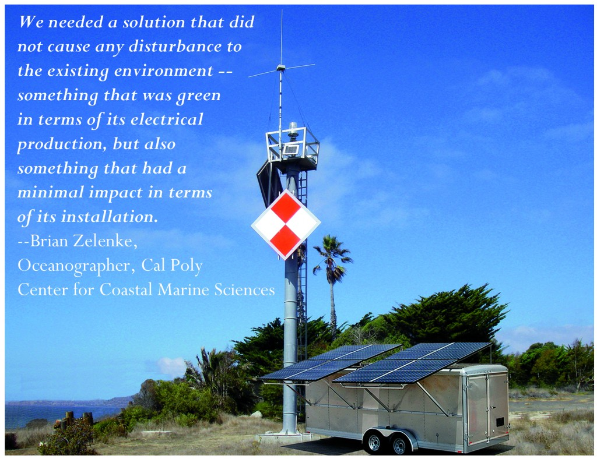

Arlington, WA – May 9, 2011- OutBack Power Technologies, Inc. and their integration partner, Mobile Solar, have responded to a request to support power requirements needed since the recent tsunami in the hard hit Sendai area of Japan. Using OutBack’s GFX3024J model inverters with 120VAC 50Hz output, Mobile Solar built and shipped a total of six MS-150 model solar generators in the first phase of a large deployment. Upon arrival, the units were immediately outfitted with water purification systems and construction tools to allow workers to rebuild residential neighborhoods.
Travis Semmes, President of Mobile Solar, said “we have chosen OutBack Power as our technology partner on the inverter/charger and charge controller side. OutBack has proven a perfect match for our product line and our customers’ needs – supplying a consistently reliable and durable product that gets the job done. With this in mind, we knew we could provide an effective, high quality mobile solar generator solution for the victims of the recent tsunami.”
“We are glad to have been given the opportunity to work with Mobile Solar to help provide these units for this important application” said Glenn Baker, OutBack’s Vice President of Sales. “Our technology has been deployed worldwide to provide an efficient way to get power to remote locations and this quick response is due in no small part to our close partnership with Mobile Solar”, added Baker.
Mobile Solar, based in Atascadero, CA, was founded in 2006 with the mission of designing and building portable, solar electric solutions, or “solar generators”. They are off-grid configurations that take the place of traditional generators, outputting clean, quiet and reliable power to a wide variety of applications. Mobile Solar is the leading industry OEM in the portable, off-grid PV market. Mobile Solar was the first to bring a full solar generator product lineup to market. For this and/or additional information in electronic form, go to www.mobilesolarpower.net.
OutBack Power Technologies, Inc. manufactures innovative power conversion solutions that integrate solar, wind and hydro resources to provide reliable electric power for the renewable energy, mobile and backup power markets. OutBack Power’s engineers have decades of power conversion electronics design and equipment installation experience and share a passion for leading the industry into a new era of performance, ease of use, durability, and standardization. OutBack Power is a member of The Alpha Group. For this and/or additional information in electronic form, go to www.outbackpower.com.
The Alpha Group represents a global alliance of independent companies that share a common philosophy – create world-class powering solutions for communication, commercial, industrial and renewable energy markets. For this and/or additional information in electronic form, go to www.alpha.com.
For more information contact:
Travis Semmes John M. Grubb
President, Mobile Solar V. P., Marketing, Alpha Technologies
(805) 466-1006 (360) 392-2331
travis@mobilesolarpower.net jgrubb@alpha.com
Take a look at Outback Power’s Website at http://www.outbackpower.com/news/article/65/
Phoenix, AZ, November 12, 2009—BuildingGreen, LLC, publisher of the GreenSpec® Directory and Environmental Building News™, today announced the 2009 Top-10 Green Building Products. This eighth annual award, announced at the U.S. Green Building Council’s Greenbuild Conference in Phoenix, recognizes the most exciting products drawn from recent additions to the GreenSpec Directory and coverage in Environmental Building News.
“Our selections of the Top-10 Green Building Products represent a wide range of product types in many different application areas,” noted BuildingGreen founder and executive editor Alex Wilson. This year’s list is particularly diverse, ranging from a recycled-content concrete block, to a flywheel energy storage system for data centers, a mobile solar generator for job-site power, and an advanced modular classroom for schools.
Energy-saving products among the Top-10 include a line of mineral wool insulation, an integrated rain-screen/insulation wall cladding for commercial buildings, a heat-pump water heater, an energy control system for lighting in commercial buildings. A structural matrix system, Silva Cell, provides a support system for urban tree roots, helping trees survive in largely impervious environments and helping to manage stormwater runoff.
One of the nation’s most innovative furniture makers, Baltix, is being recognized for new products that incorporate a variety of biobased, FSC-certified, and recycled-content materials. “Many of the Top-10 products this year have multiple environmental attributes,” said Wilson.
BuildingGreen’s Top-10 product selections, as in previous years, are drawn from new additions to the company’s GreenSpec product directory. About 200 product listings have been added to the GreenSpec database during the past year. “New products are being introduced all the time, making it a challenge for our staff to keep up,” said Wilson. “We also continue to come across products that have been on the market for years, but were under our radar screen.” The GreenSpec database includes more than 2,100 product listings.
A major driver of the development of green products continues to be the U.S. Green Building Council’s LEED® Rating System (Leadership in Energy and Environmental Design), which awards points for the use of certain product types, such as certified wood, or for the energy savings that green products can achieve. “Designers of LEED buildings are looking for green products, and manufacturers are responding,” said Wilson. In the online version of GreenSpec, users can find products organized by LEED credits as well as by building category and the CSI MasterFormat structure.
- Pozzotive Plus CMUs and Concrete Brick from Kingston Block
- Thermafiber Mineral Wool Insulation Products
- Invelope Integrated Wall Insulation and Rainscreen System
- Baltix Recycled- and Biobased-Content Office Furniture
- Project FROG Modular Green Classroom
- Rheem HP-50 Heat-Pump Water Heater
- Convia Energy-Management Infrastructure
- Pentadyne GTX Flywheel Energy Storage
- Silva Cell Subsurface Tree Protection and Stormwater System
- Mobile Solar Power Generator
- www.BuildingGreen.com

In the summer of 2007, Mobile Solar Power was awarded a bid from California Polytechnic State University, San Luis Obispo to build three solar generators. The university’s plan was to use these generators to power high frequency radar installations along the Central Coast near the Diablo Canyon nuclear power plant.
The radar installations, which are three of several dozen stretching from the Mexican border to Alaska, are part of a larger project called the Coastal Ocean Currents Monitoring Program (COCMP). The program, which is a conglomerate of several organizations including the National Oceanic & Atmospheric Administration (NOAA), Scripps institute of Oceanography, University of California, and the California State University system, condenses ocean current data for easy access and use by other organizations, businesses, and individuals.
According to the COCMP website (www.cocmp.org), the primary function of the organization is to provide information to water quality monitoring agencies. However, the data obtained from the radar sites has several other very important benefits. It helps researchers look at the impact of global warming on ocean currents, prepare for potential oil spills by tracking current flows, and aid the US Coast Guard and maritime shipping vessels by mapping out surface currents.
Getting power to remote locations on the coast is not always easy, which is why Cal Poly, and more recently the University of California at San Diego, made the decision to use solar generators to power their equipment. By storing excess power in the battery bank during sunny days, the four MS-300 Series solar generators positioned along the California coast can provide round-the-clock, reliable power to the radar sites. In addition, the weatherproof interior of the cargo trailers makes a perfect place to keep the sensitive equipment needed to monitor the currents and upload the data from a remote location.

For more information on this project, please visit the following websites:
www.sio.ucsd.edu
www.marine.calpoly.edu
ww.sccoos.ucsd.edu (Mid-ranged installation at Diablo Canyon)
www.sccoos.ucsd.edu (Long-ranged installation at Diablo Canyo
Witnessing the drawbacks of a gas-powered generator on a job site, Travis Semmes decided to take the necessary steps to reduce air and noise pollution by developing his own mobile solar-powered generators.
Semmes & Co. Builders typically works on remote jobsites where the local utilities haven’t run electrical lines, so most of the power for corded tools during construction comes from a site generator. But working with gas generators on sites an hour or more from civilization proved to be problematic, says custom builder Turko Semmes. Project managers noticed drawbacks to gas generators, such as sound levels and maintenance. And at least once every week or two no one in the crew would remember to bring the gas for the generator.
Because Semmes installs photovoltaic systems in many of the homes he builds, his company has plenty of experience with that technology. So it wasn’t a great leap for Turko’s son Travis to develop a solar-powered site generator. Built into a small trailer, the company’s Mobile Solar Generator can produce enough electricity to power six to ten workers’ tools, according to Semmes.
Because the generator has worked so well for it, Semmes & Co. is launching a business to manufacture and sell four models of the Mobile Solar Generator, which can be personalized with a company’s logo. Mobile Solar Power LLC. 805.466.6737. www.mobilesolarpower.net.
CUSTOM HOME Magazine
March 1, 2006
By Stephani L. Miller
When most people hear the word “generator”, they think of a small gas or diesel motor and alternator. While these fossil fuel systems are simple and cheap, they have many drawbacks. A traditional generator must run at all times to provide power, which means that the annoying hum of the internal combustion engine and the output of hazardous gasses such as carbon monoxide are always present. Fossil fuel generators must also be refilled with fuel frequently – a costly chore, and a difficult one when working in certain locations. On top of this, maintenance costs such as oil and filter changes, and eventually engine overhauls, add to the cost of the produced watt.
Although the initial cost of a fossil fuel generator may seem enticing, the reality is that the numerous costs associated with operating a generator for several years can add up quickly and make it much less of a bargain than you originally thought. Luckily, there are other options available.

A company in California called Mobile Solar Power is working to change this notion of what a generator is and ought to be. By utilizing off-grid photovoltaic design concepts (i.e., PV panels, batteries, charge controllers and battery inverters) its products provide a reliable alternative to the fossil fuel generator. And unlike traditional generators, these solar generators last for decades.
Their design is simple: take electricity from the sun, run it through a charge controller and into a large battery bank. Have an inverter pull that power out of the batteries (when needed) and make it available as pure sinewave current. The trick: do all this inside of an enclosed trailer.
One of the advantages of a solar generator is its ability to store excess power and run even without power coming in from the sun. A fossil-fuel generator will sit and idle, wasting fuel and slowly eroding the moving parts inside, just to keep an answering machine powered up. When a solar generator is producing more than its current energy demand, the extra electricity is simply saved in the battery banks for later use. A solar generator is also quiet and clean; there’s no background noise or cans of gas behind the shed. And solar generators require very little maintenance – occasionally refilling the batteries with distilled water and wiping off the solar panels with a towel is about as hard as it gets. Solar generators are just as versatile as their fossil fuel counterparts. Smaller solar generators are easy to move, and can provide enough energy for campsites, RV’s, and home construction sites without breaking a sweat. They can be used on farms and ranches to power well pumps. Large solar generators provide enough power for a cabin or small home, and can easily be moved between your permanent residence and summer getaway. Solar generators can also be charged with a combustion generator or utility power. This gives heavy energy users the option of charging the battery bank before beginning the days work, or using the old fossil fuel generator in conjunction with the solar system.
Whether you are looking to help the environment, make a sound long-term investment, or replace your fossil fuel generator with a long lasting, low maintenance system, a solar generator is the right choice for you. You don’t need to deal with that loud, stinky gas generator any more – there is an alternative. Mobile Solar Power’s generators can provide you with the power you need, wherever you need it.
by Dylan Wood, Mobile Solar Power
www.altenergymag.com